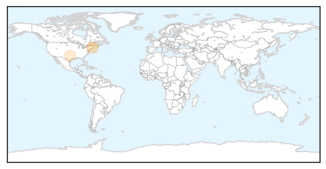
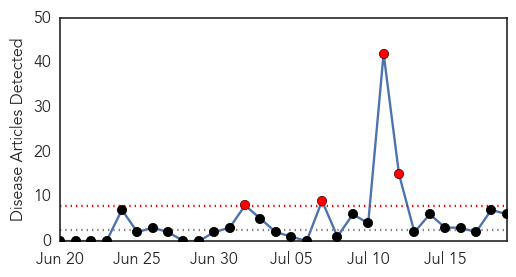
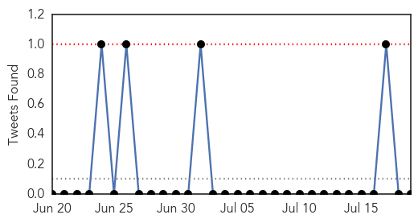

West Nile Virus
30-Day Web Trend
6 alerts, 9 warnings

30-Day Twitter Trend
0 alerts, 0 warnings

Article Locations
Article Confidences

Top Articles:
Top Tweets:
-
No tweets found for Jul 19, 2014
Influenza
30-Day Web Trend
4 alerts, 0 warnings

30-Day Twitter Trend
0 alerts, 0 warnings

Article Locations

Article Confidences

Top Articles:
- 0.980
- Antibiotics May Have Been Wrongly Prescribed For Influenza « CBS Atlanta
- 0.977
- Immunization for Ontario health care workers lags as patients die
- 0.856
- Risks of Flu Research Demand Openness From Labs
- 0.836
- From anthrax to bird flu – the dangers of lax security in disease-control labs
- 0.831
- Doctors Without Borders Calls for Wider Access to Vaccines for Children in Emergencies - Uganda
- 0.700
- As final migrant kids leave Nogales, officials say they are in good health
Top Tweets:
-
No tweets found for Jul 19, 2014